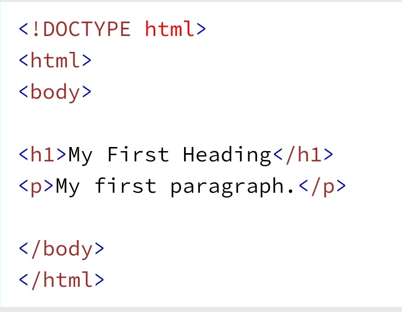
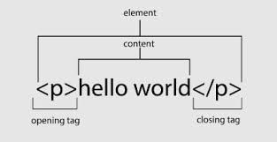
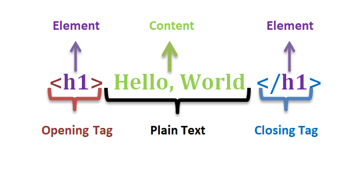
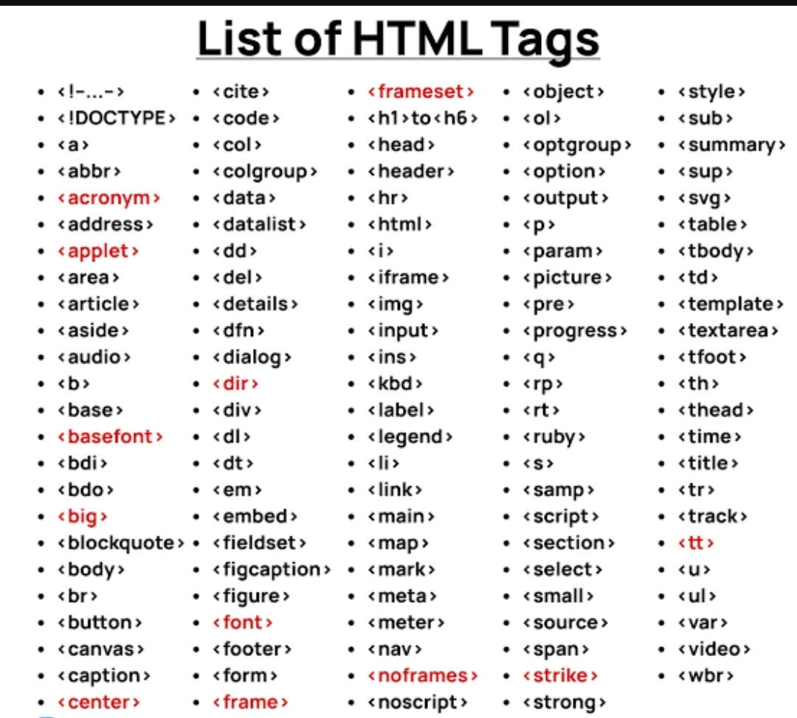
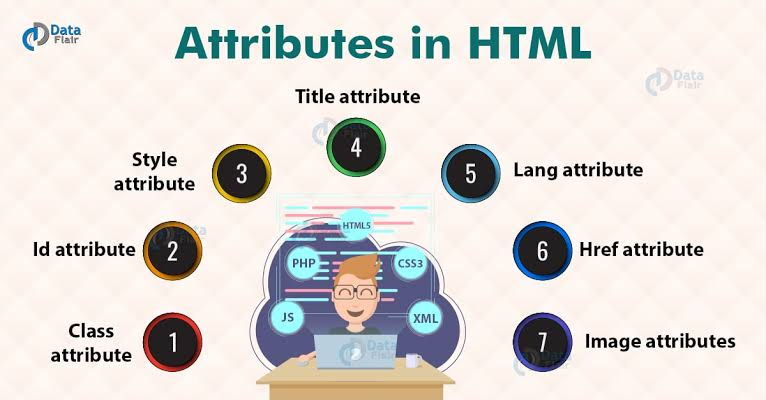

FRONT END DEVELOPMENT
HTML COURSE

WEB DEVELOPMENT.
Front end web development is the use of web languages to developed stunning,interactive and dynamic websites i.e, the use of HTML,CSS, and Javascript. Which are known as the FRONT END skills.
HTML INTRODUCTION:
HTML stands for “HyperText Markup language”.
“HyperText"
HyperText is the linking of two or more web pages together with the use of a link. When you clicked a link and it take you to another web page that means you have clicked on HyperText.
“Markup language”
Markup language is a computer language that is used to add layouts and formatting conventions to a text document.it makes text more interactive and dynamic. It turns text into images,tables,links etc.
HTML is used to build and structure a web page and it contents by using HTML tags. Think HTML as a block which is used to build an house and you as a bricklayer who lay the block accordingly to become an house.That’s exactly what html is.
HTML tags are blocks while you are the layer which is developer.
So,every web developer must learn html first to be able to create websites.
An illustration of HTML below:
I think you have the understanding and uses of HTML now😊
HTML CORE:
Meta tags.
Code editor Web basic codes.
Tags/Elements.
Attributes.
Anchor.
File/File paths.
Form/Attributes.
Inputs/Attributes.
Entities/Symbols.
Comments.
Let’s talk about the outlines respectively:
Meta tags:
Meta tags are also known as metadata,they provide data or more information about the web page and allow browsers to understand and display the web page correctly. It is inserted in the head tag section.
Examples/Types:
Below meta tag specifies the new HTML version.
<meta charset="utf-8">
Below meta tag specifies the responsiveness of the web page.
<meta name="viewport" content="width=device-width, initial-scale=1.0">
Below meta tag specifies the description of the web page.
<meta name="description" content="write the description of the page here">
Below specifies the author name
<meta name="author" content="write your name here">
Below meta tag specifies the keywords for the web page.
<meta name="keywords" content="write your keywords here">
Below title tag specifies the web page title.
<title>... </title>
Note: The HTML tags here are neither open nor close because it will not display on ur screen when it's open and close. Go to tags/element section to read and see how to open and close HTML tags.
Code editors:
Code editors are used for writing and running codes. There are multiples of code editors that are used for coding but it depends on ur favorite and choice code editor that will be suitable for you.
| Web dev | Web dev | Web dev | Web dev | Web dev | Web dev |
|---|---|---|---|---|---|
| Visual Studio code | Notepad++ | Atom | Vim | Replit | Sublime |
The most common used code editor is the visual Studio code(VS code) because it works across platform including windows,Linux, and macOS and also has a lot of features and functions for easy web development process.
You can download it by searching (code.visualstudio.com) and install it in your PC.
If you don’t have PC,you can also learn/practice coding with your smartphone. Here are some smartphone code editors for HTML,CSS and JavaScript which are available on Google play store and Apple App Store:
| Android users | IPhone users |
|---|---|
| Spck editor,Acode,Anwriter or TrebEdit | JSitor |
Web basic codes:
Web basic codes are the basic codes of web dev, which every web developer should follow the principle and steps when building and finishing website.these are the codes below.

That’s the basics of HTML(web) building codes that is used to create websites.
So,let’s look to it respectively:
<!DOCTYPE>
It instruct the browser about the document type which is the (html document)
<html>
This is main (html) that contains what you instruct the browser to read about the codes you are writing. It also refer to the root of html document.
Inside the html open tag,there is “lang” attribute which stands for the language of the html document you want to write.it has a value of “en” which stands for english language.
<html lang=“en”>
<head>
This is the (head) of the html that provides more informations about the documents you are writing which contains the metadata(informations) about the web page.it is mostly used by search engines.e.g of metadata are meta(charset,name,http-equiv,viewport etc.
They have different values and here are the syntax respectively.
<meta tag_attribute=“value”>
Lists of meta tags:
<meta charset="utf-8">
<meta name="viewport" content="width=device-width, initial-scale=1.0">
<meta name="description" content="write the description of the page here">
<meta name="author" content="write your name here”>
<meta name="keywords" content="write your keyword here">
<title>... </title>
This is a (title) written between the <head>...</head>. It is among the meta information about the web page and show on the browser by the search engines.
<body>
This is the (body) of the document you are writing.
<h1>
This refers to the(heading one) we have six heading in HTML.e.g. h1,h2,h3,h4,h5 and h6. They are bigger than each other and has their own functions.e.g h1 is bigger than h2 and so on respectively.
<p>
This is a (paragraph), that contains the details about html document.
Let’s look about opening and closing tag.
opening tag <>It has a sign like the angle brackets.It is used to start every HTML elements before the elements.
Closing tag <>
It has a slash and the angle brackets which is known as closing tag. It is use to close every HTML elements.
Illustration of opening and closing tag:

The p without slash is the opening tag,“Hello World” is the element(content) and the p with slash is the closing tag. Which will output Hello World on the code editor browser interface.
Note: browsers execute codes from the top vertically and move to the left horizontally and stopped at the right. Without the starting and closing tag,HTML codes will not be execute by browsers.
Tags/Elements:
Html tags and elements are used to make website. i.e, they works together. The content you write inside after the html opening tag is the element.
There are two tags in HTML,namely;
The opening tag and the closing tag.
HTML Elements are the code that are written between the tags.
HTML tag and element syntax illustration:

All HTML Tags below;
Note: it is a must to close the tag when open else it will lead to error.
Attributes:
Html attributes are used to add additional features to html elements which consists of attribute name and value.e.g, style,src(source),href and title.
style attribute is used to add styling to html contents.
src attribute is used to find or link image into html contents or used to link external JavaScript file to html page.
href attribute is used to linked external CSS file to html page/create links to another page.
title attribute is used as a tooltip in most browsers.it display it text when user move the cursor over a link or any text.you can use it with any text or link to show the description about the link or text.
Html attributes syntax:
<tag attribute_name=property:value>contents & lt;/tag>
h1 style="color:red">Hello World
HTML attributes illustration

Anchor:
Html anchor tag defines an hyperlink.it is used to add a link to websites with the use of tag and the href attribute.
HTML anchor syntax:
<a href=“url”>Link
HTML link attributes:
The target Attribute
By default, the linked page will be displayed in the current browser window. To change this, you must specify another target for the link.
The target attribute specifies where to open the linked document.
The target attribute can have one of the following values:
_self Opens the document in the same window/tab as it was clicked
_blank Opens the document in a new window or tab
_parent Opens the document in the parent frame
_top Opens the document in the full body of the window
HTML file
HTML file is created using the period(.) sign and html.
HTML file syntax:
Your filename.html
Note:if you don’t add the html after the period(.),the html elements won’t work.
HTML paths
HTML file path is used to describe the location of a file in a website folder.it like an address of file for a web browser.we can link any external resources to our HTML file with the help of file paths such as images,file,CSS file,JavaScript file,video etc.
There are two types of file paths:
Absolute file paths:
It specifies full URL address.
Example:
<https://m.facebook.com/>
Relative file paths:
Relative file path specifies to a file which is related to the location of current page.
Example:
image.jpg
Important points for file path:
Always remember to use proper URL,file name,image name,else it will not display on the web page.
Try to use relative file paths,so that your code will be independent of URL.
Use (alt) so that it will tell the user the name of the image that’s displayed on the web page when there’s low internet connection(recommended).
Use width/height for setting or balancing image(s) on web page(recommended for responsiveness).
Form/Attributes:
Html form is a section of a document which contains controls such as text fields,password fields,checkboxes,radio buttons,submit buttons,menus etc.it is used for collecting some data from the site visitor.e.g if a user want to purchase some items on internet,he/she must fill the form such as shipping address and credit/debit card details so that item can be sent to the given address.
Form attributes are attributes that add additional features to form which consists of action,method,target,name etc. Example of HTML action and method form attribute.
HTML form syntax:
<form action="server url" method="get|post">
<input controls e.g. textfield, textarea, radiobutton, button
input type/Attributes:
input type is the form input field where user can enter provided details.
“type”
is an attribute of input which defines information field and consists of elements such text,password,submit,radio,checkbox,button,image etc.
input attributes:
name it is used to add form details to the server(important for server.
placeholder it is used to add User experience in input field(optional).
class it is used to add CSS/JavaScript into the html document using the period(.) sign as selector in the CSS/JavaScript file.
id it is used to add CSS/JavaScript into the html document by using the hash(#) sign as selector in the CSS/JavaScript file.
HTML input type syntax:
<input type=“text” name=“name of form>form content>
Entities/Symbols:
Html entities/symbols are used as replacement of characters which allow you to add icons,geometric shapes,mathematical operators.Some entities/symbols are not present on a normal keyboard.we have to use html entity names to add such symbols to an html page.
If there’s no entity name exists,you can use an entity number,a decimal, or hexadecimal reference.
Example:
use the and sign(&) and type copy beside the and sign to change it to ©️
Html comments are some texts written in codes to give an explanation about the code,and they are not visible to the user.it make code easy to understand and increase readability of code.
There are two types of html comments namely:
Single line comment and
Multiple line comment
HTML single line comment syntax:<!--This is single line comment -->
Html multiple line comment syntax:<!-- This is multiple line comment -->
.Note:The commented code will not be visible on the web page or see by the user, and hence you can use comment tag for documentation purpose,and debugging purpose(recommended).
Wow! You have fully completed the HTML course.
Now,u are capable to build a static website.
But you have to add styling to your website to make it looks beautiful and attractive. Here come the second web language: CSS(cascading style sheet).
The best way is to practice what you have learned so far.
Download code editor and start your coding journey.